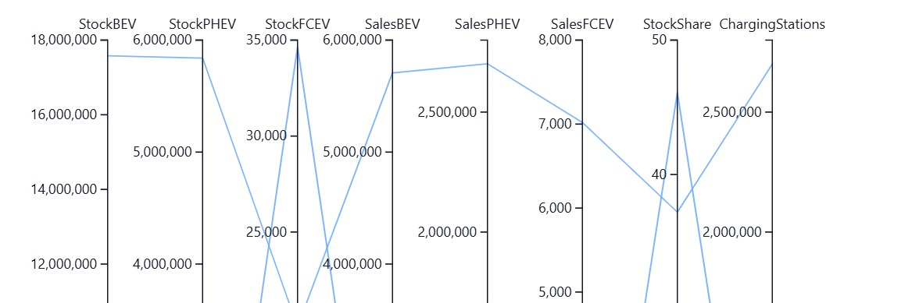

Parallel Coordinates Plot
Purpose: To simultaneously compare multiple metrics across a large number of countries, allowing for the identification of profiles, patterns, and trade-offs.
This chart is ideal for multivariate analysis. Instead of comparing just two variables in a scatter plot, here we can visualize four or more at once.

How to Read the Chart
- Vertical Axes: Each vertical axis represents a different metric (
StockBEV,StockPHEV,ChargingStations). - Lines: Each line that crosses the axes represents a single country. The line's path shows that country's profile across all metrics.
- Patterns: Countries with similar profiles will have lines that follow similar paths. Crossing lines indicate trade-offs (a country might be high on
StockBEVbut low onStockPHEV).
Components and Features
-
Reorderable Axes:
- You can click and drag the axes to reorder them. Placing two axes next to each other makes it easy to see the correlation between those two variables.
-
Interactive Highlighting (Hover):
- Hovering over a line highlights it across the entire chart and displays its label (the country name), making it easy to identify individual profiles.
-
Time Slider:
- Allows you to see how the profiles of all countries change year after year.
Implementation Walkthrough
This visualization requires a specific data preparation step to aggregate data to the country level and then format it into a JSON-like structure expected by the JavaScript component.
Step 1: Data Aggregation
The primary wide DataFrame is granular (Country × Mode). For this country-level view, we must first aggregate the data by summing up the values for all modes within each country.
# The 'wide' DataFrame contains data per mode
# We need to create a new DataFrame aggregated by country
# Select all columns that contain yearly data
value_cols = [c for c in wide.columns if re.search(r"__F\\d{4}$", str(c))]
# Group by 'region' (country) and sum the values
wide_ev_country = wide.groupby("region", as_index=False)[value_cols].sum(min_count=1)
Step 2: Data Packing for JavaScript
The ParallelEnergy widget expects data in a specific nested dictionary format. This helper function transforms the aggregated DataFrame into that structure.
def build_energy_pack(df_in, dims, years, key_col="region"):
records = []
for _, row in df_in.iterrows():
rec = {"label": row[key_col]}
for d in dims:
rec[d] = [row.get(f"{d}__F{y}", 0.0) for y in years]
records.append(rec)
return {"years": [f"F{y}" for y in years], "dims": list(dims), "records": records}
# Define the dimensions and years to include
dims_all = ("StockBEV", "StockPHEV", "StockFCEV", "ChargingStations")
YEARS = [y for y in all_years if y >= 2015]
# Build the final data packet
pack = build_energy_pack(wide_ev_country, dims_all, YEARS)
Step 3: Widget Initialization and Data Injection
We initialize the ParallelEnergy widget. Note that it is first created with placeholder data and then the real, packed data is injected into the .data attribute.
from Isea import ParallelEnergy
# Initialize the widget
w_parallel = ParallelEnergy(
data=pd.DataFrame(), # Start with empty data
dims=dims_all,
year_start=max(YEARS),
width=1280,
# ... other config options
)
# Set custom options for the visualization's appearance
w_parallel.options = {
**w_parallel.options,
"title": f"EV Landscape — {max(YEARS)}",
"reorder": True,
"log_axes": False,
}
# Inject the prepared data packet into the widget
w_parallel.data = pack
Step 4: Display the Visualization
Displaying the widget variable renders the interactive parallel coordinates plot.
# Display the widget
w_parallel
Metrics Used
This visualization compares the following key metrics for the top countries by BEV stock:
- StockBEV: The total fleet of Battery Electric Vehicles.
- StockPHEV: The total fleet of Plug-in Hybrid Electric Vehicles.
- StockFCEV: The total fleet of Fuel Cell Electric Vehicles (Hydrogen).
- ChargingStations: The total number of public charging points.
Analytical Questions This View CAn Answer
- Do countries with a high BEV stock also tend to have a high PHEV stock, or are these mutually exclusive strategies?
- Are there visual "clusters" of countries with similar adoption profiles?
- Which countries are outliers with a very different profile from the rest (e.g., many chargers but few vehicles)?